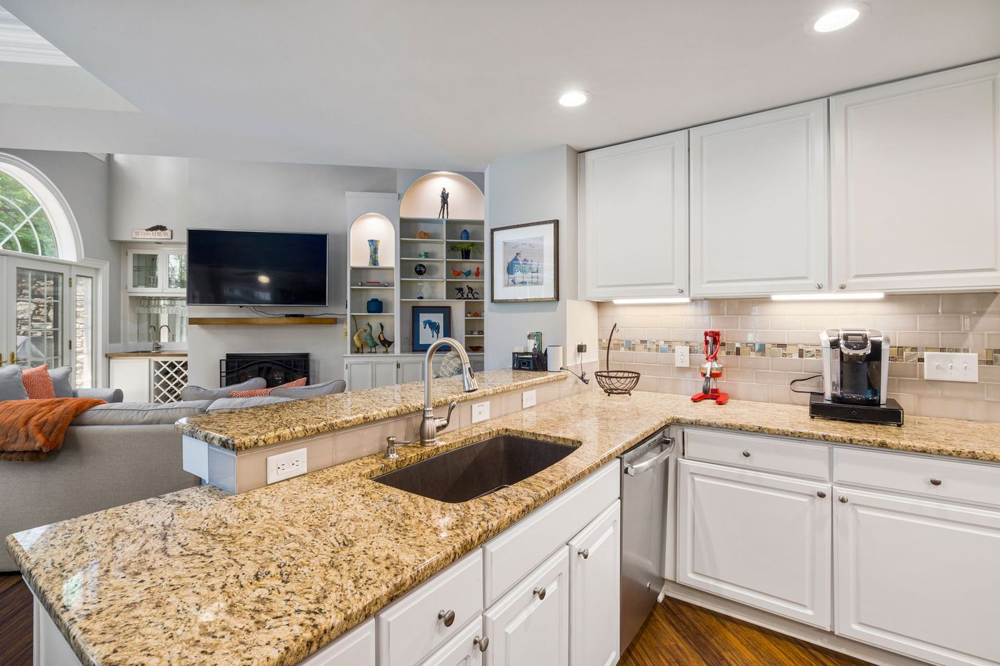
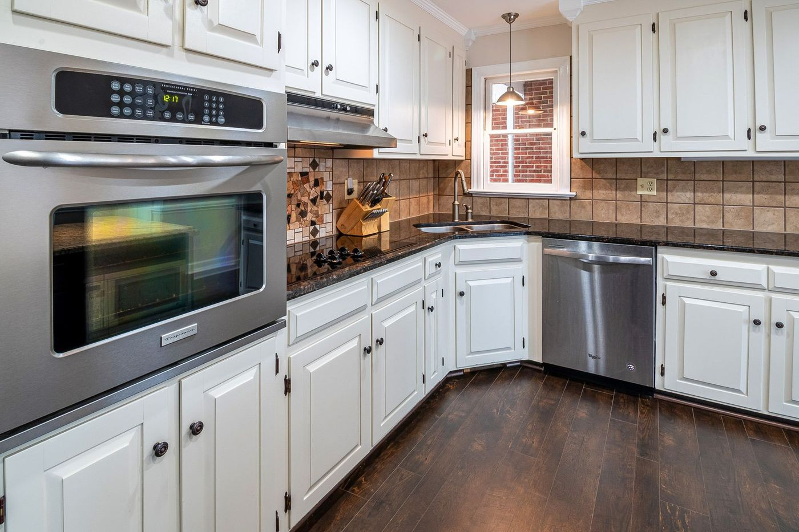
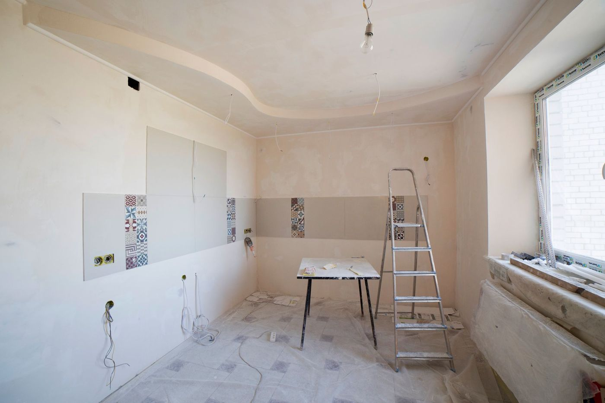

Kitchen Renovations Cape Town
A kitchen is plumbing, electrical and waterproofing behind cabinetry. Get the order wrong and the finishes pay for it.
What a kitchen renovation involves
Kitchen renovations in Cape Town are decided by the services, not the doors. Sinks, hob positions, plug points and the fall of the waste pipe set the layout long before a worktop is chosen.
We plan the room around what is already in the walls, strip out, do the plumbing and electrical first fix, then fit cabinetry, worktops, tiling and finishes with one team. If the layout changes, we say what that costs honestly, because moving a drain is a different job to replacing doors.




Kitchen renovations Cape Town: what is involved
From a refresh to moving walls, with services checked before anything is closed up.
Layout and planning
Measured plan around existing plumbing and electrical, with the changes priced.
Get estimate →Cabinetry and worktops
Units fitted level and scribed to the wall, worktops templated and joined cleanly.
Get estimate →Plumbing and electrical
First fix before closing up, with points where the appliances actually go.
Get estimate →Tiling and splashbacks
Level surfaces and neat cuts around sockets, done after first fix.
Get estimate →What a kitchen renovation costs
| Scope | What it involves |
|---|---|
| Refresh | New doors, worktop and splashback on the same layout, existing services kept. |
| Full renovation | New cabinetry, worktop, tiling and appliances with services largely in place. |
| Layout change | Walls moved, plumbing and electrical relocated, often a new window or opening. |
Each scope is quoted separately so you can see what the layout change actually adds.
Get a written kitchen renovations estimate
Send your kitchen measurements and a photo and we will scope the options.
How we work
1. Measure and plan
Layout drawn around services, with the scope written down.
2. Strip out
Old units removed, walls and floor checked for damage.
3. First fix
Plumbing, electrical and waterproofing before closing up.
4. Fit and hand over
Cabinetry, worktop, tiling, then a snag list worked through with you.
- One team for the room: No waiting for a plumber between trades.
- Services checked first: Before the wall is closed, not after.
- A kitchen during the work: We keep a usable sink and power point as long as possible.
The Plinth Standard
- Written scope + fixed price before we start
- Photo updates if you're not on site
- 12-month workmanship warranty on renovations
- Goodwood-based, fast response across Cape Town
Kitchen Renovations across Cape Town
We are based in Goodwood and cover Cape Town within about 25km.